Biometrics System Background
IJCB Tutorial
September 15, 2024
Traditional Biometric Recognition
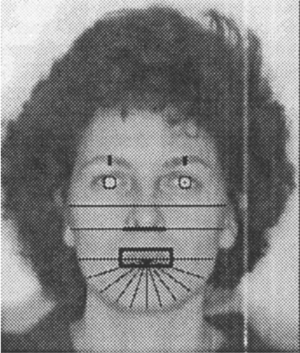
Geometrical Facial Features
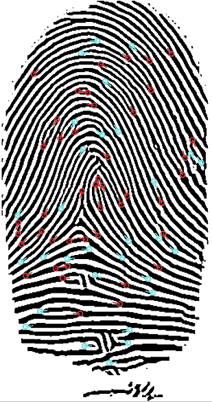
Minutiae Features
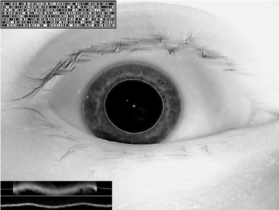
Iriscode features
Traditional Biometric Recognition Pipeline
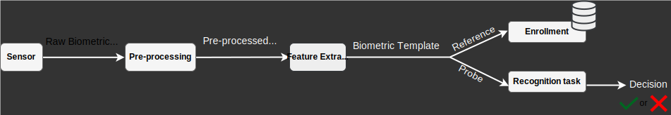
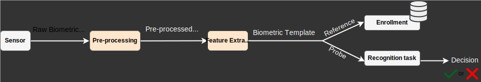
Pre-processing and feature extraction differ per modality
Traditional Face Recognition

- Pre-processing and feature extraction
- Face detection
- Face alignment
- Normalization
- Extraction of handcrafted features: i.e., eigenfaces, fisherfaces, local binary patterns, Gabor filters
- Comparison
- Distance-based comparison: i.e., Euclidean distance
- Classifier-based comparison: i.e., Support Vector Machines (SVM)
Traditional Fingerprint Recognition
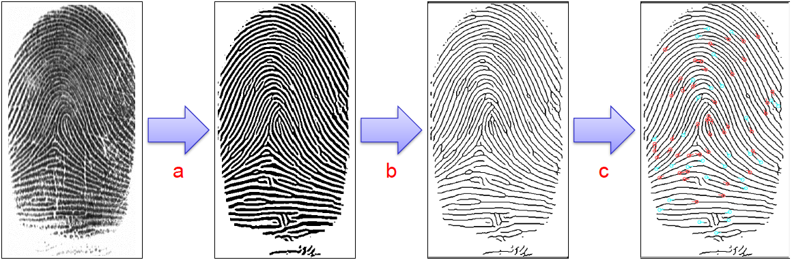
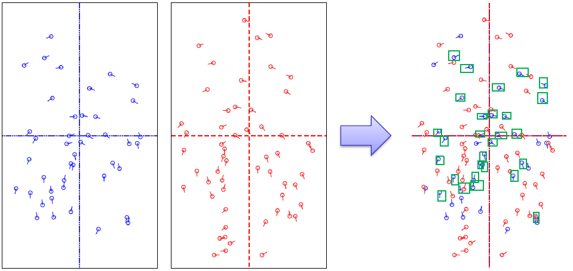
- Source: Minutiae
- Pre-processing and feature extraction
- Fingerprint segmentation
- Local ridge orientation and frequency
- Fingerprint image binarization and thinning
- Detection and extraction of minutiae points
- Comparison
- Minutiae-based comparison: i.e., global minutiae-based approach and Minutia Cylinder-Code
Traditional Iris Recognition
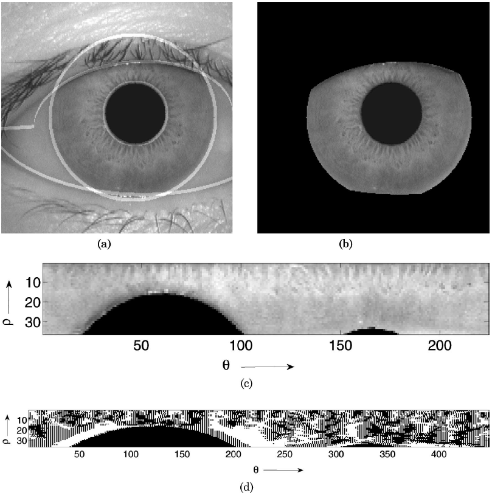
- Source: Iriscode
- Pre-processing and feature extraction
- Iris segmentation
- Masking iris texture region
- Unwrapping the iris image
- Extraction of iris code
- Comparison
- Iris is sensitive to iris rotation angle that varies from capturing to the other.
- As mitigation, iris comparison requires calculating the minimum Hamming distance between the $1^{\text{st}}$ iris code and $n$ circular shiftings of the $2^{\text{nd}}$ iris code to the left and another $n$ shiftings to the right.
Limitations of Traditional Recognition Systems
- Handcrafted features capture only obvious patterns
- Pre-processing and feature extraction are separate procedures
- Each modality follows a specific processing and comparison
- Failure to capture the diversity of facial features
- Variation of minutiae points per fingerprint.
- $2n+1$ dissimilarity measures for one iris comparison.
Those limitations affect the overall biometric recognition accuracy
Deep Learning-based Biometric Recognition
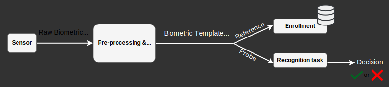
DL unified biometrics processing across modalities
- Extraction of distinctive features
- Fixed-length numerical representation
- On-the-fly comparison for all modalities
Some DL-based Biometric Recognition Solutions
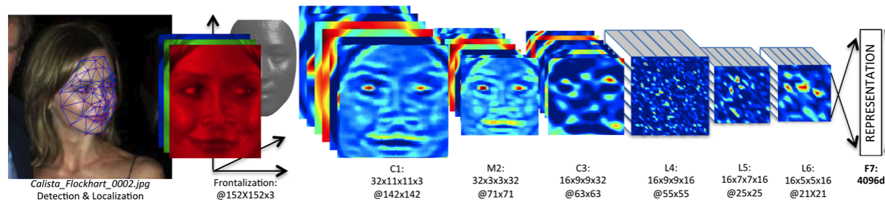
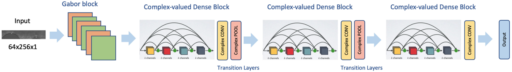
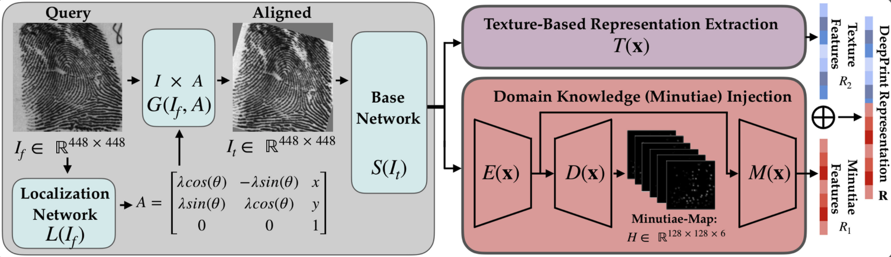
Biometric recognition tasks
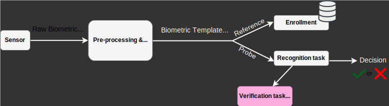
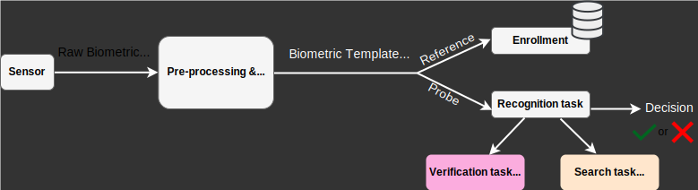
Biometric Verification task (1:1 comparison)
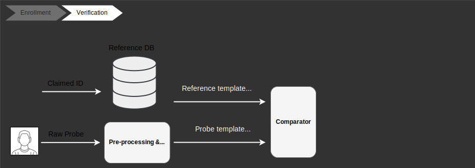
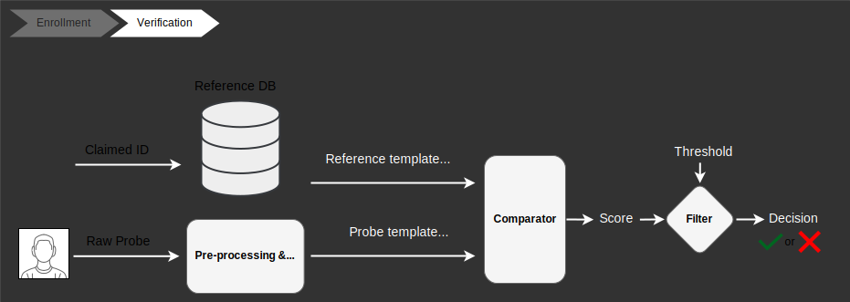
Do the reference and probe templates belong to the same identity?
Verification Performance Assessment
- Verification is assessed by measuring
- False Match Rate (FMR)
- False Non-Match Rate (FNMR)
- Equal Error Rate (EER)
- Verification performance can be visualized by the DET curve
Biometric Search task (1:N comparison)
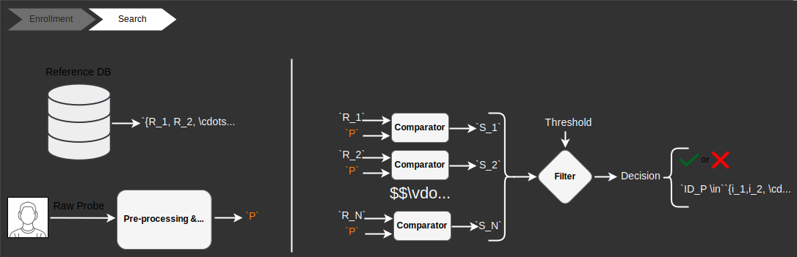
Does this probe template belong to the reference DB?
Search Performance Assessment
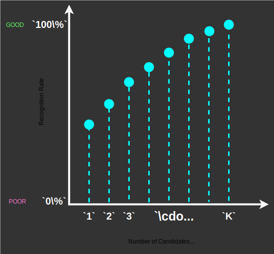
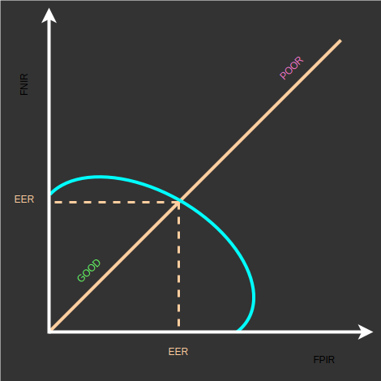
- Search performance depends on the scenario
- Closed-set scenario
- Number of times the probe's identity appears in the list of potential candidates
- Visualized by the Cumulative Match Curve (CMC)
- Open-set scenario
- False Positive Identification Rate (FPIR)
- False Non-Identification Rate (FNIR)
- Equal Error Rate (EER)
- Visualized by the DET curve for identification
Effect of DL on biometric recognition performance
- DL combines pre-processing and feature extractor in single inference.
- DL-based feature vectors are distinctive fixed-length representations.
- Single vector-based comparison for all modalities.
- DL performance surpasses traditional handcrafted methods.
Takeaways of this part
- Traditional handcrafted features are less reliable.
- DL enhances the performance compared to traditional ones.
- DL unifies biometric processing and comparison for all modalities.
- Main biometric tasks are verification and search.
- Performance assessment is essential to avoid poor biometric systems with security issues.